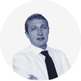
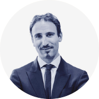
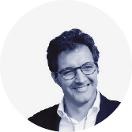
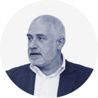

Insieme per una bella azienda
Con questo documento vi accompagniamo alla scoperta del nostro modo di lavorare, sperando che anche voi possiate apprezzare ciò che insieme facciamo per costruire ogni giorno una “bella azienda”.
FEDERICO
SARZI BRAGA Presidente e Amministratore Delegato
Chi Siamo
Il gruppo San Pellegrino
Dal 1899 portiamo prodotti di alta qualità alle persone e alcune delle eccellenze del nostro Paese in oltre 150 nazioni del mondo attraverso i nostri brand.
Fatturato realizzato2017
895milioni di euro con 3,7 miliardi di bottiglie prodotte
NORD AMERICA +9,8% vs 2016
SUD AMERICA +18,4% vs 2016
EUROPA +4,2% vs 2016
AFRICA +13,8% vs 2016
ASIA e OCEANIA +6,7% vs 2016
Dal primo aprile 2018 il Gruppo Sanpellegrino - Nestlé Waters Italia guida la Regione South Europe del Gruppo Nesté Waters.
FEDERICO SARZI BRAGA Presidente e Amministratore Delegato Gruppo Sanpellegrino | Regional Business Head Nestlé Waters South Europe
- GIORGIO MONDOVÌ Head of Italian Business Unit
- STEFANO MARINI Head of International Business Unit
- GIULIANO DAL FO Head of Finance & Control
- GABRIELLA CARELLO Head of Human Resources
- TIZIANA ALBANESE Head of Technical & Manufacturing
- MAURA SARTORE Head of Supply Chain
- STEFANIA MONTAGNER Head of Market Program
- ANTONIO PUNZIANO Head of Public Category Affairs
- MANUELA KRON Head of Corporate Affairs
S.PELLEGRINO
L’acqua ambasciatrice dell’eccellenza italiana.
Fonte: SAN PELLEGRINO TERME (BG).
BELTÈ
Stile di vita “naturale” con la Linea Bio senza zuccheri e dolcificanti, certificata da BioAgricert.
ACQUA PANNA
Il gusto della Toscana sulle tavole di tutto il mondo.
Fonte: SCARPERIA (FI).
SANBITTÈR
Il vero aperitivo all’italiana. Emblema dell’autentico aperitivo italiano, sinonimo di convivialità e alta qualità.
LEVISSIMA
La purezza della montagna nel cuore.
Fonte: CEPINA (SO).
GINGERINO
La forza della genuinità. Storico aperitivo del Triveneto, al cui territorio e alle cui tradizioni ancora legato da una forte relazione.
NESTLÉ VERA
Per un futuro sempre più “sano”.
Fonte: SAN GIORGIO IN BOSCO (PD), SANTO STEFANO QUISQUINA (AG), CASTROCIELO (FR).
ACQUA BRILLANTE
Tradizione dissetante. Una tradizione italiana, nata da un marchio storico che risale al 1954 e preparata con un’antica ricetta tuttora segreta.
BIBITE SANPELLEGRINO
Il valore delle tipicit. agricole italiane. Una vasta gamma di bibite con una lunga storia, iniziata nel 1932 con l’Aranciata Sanpellegrino, che contiene solo arance 100% italiane.
NESTEA
Gusto autentico e rinfrescante con una nuova ricetta più semplice e con ingredienti selezionati. Foglie di tè provenienti dal Nilgiri, India, con certificazione Rainforest Alliance.
LE PERSONE DI SANPELLEGRINO
Le persone di Sanpellegrino sono il cuore, la forza, la passione dell’azienda. Il coinvolgimento diretto delle persone dell’azienda gioca un ruolo importante nello sviluppo aziendale. Determinanti sono le politiche di genere e di work life balance, grazie ad un programma di smart working che coinvolge tutti i livelli (con una media di 4.100 ore al mese nel 2017).
EQUILIBRIO DI GENERE
Donne sulla popolazione complessiva
Uomini sulla popolazione complessiva
LEADERSHIP
La sicurezza delle persone
Nel 2017 è stata confermata la certificazione OHSAS 18001 (Occupational Health and Safety Assessment Series) dei sette stabilimenti e della sede di Assago. Nel corso del 2017 si sono verificati 9 incidenti di lieve entità, a fronte dei 6 dell’anno precedente.
IL SANPELLEGRINO BOOSTING PROGRAM
Il Gruppo Sanpellegrino insieme a H-Farm ha definito e sviluppato i diversi aspetti legati all’implementazione di un modello di business innovativo.
Nel primo H-ACK 120 dipendenti hanno partecipato ad una maratona di idee di 24 ore, al termine della quale sono stati presentati 25 progetti. “Bot-Tle”, è diventato protagonista della seconda fase, il Rocket Program.
La circolarità e l’Agenda 2030
delle Nazioni Unite
Dal settembre 2015 le Nazioni Unite hanno approvato l’Agenda Globale per lo sviluppo sostenibile con i relativi 17 Sustainable Development Goals.
Il Gruppo ha condotto un’analisi di materialità che incrocia le principali responsabilità e azioni connesse al proprio business con i temi degli UN SDGs. La declinazione degli obiettivi sul business del Gruppo Sanpellegrino vede un impegno prevalente sulla Water Stewardship (SDG 6), sulla produzione e consumo responsabili (SDG 12) e sullo sviluppo socio-economico, in particolare nei nostri territori (SDG 8).
Accesso al cibo
Sovranutrizione e malnutrizione
Marketing responsabile
Sicurezza degli alimenti e dei prodotti
Benessere degli animali
Sviluppo rurale e riduzione della povertà
Approvvigionamento responsabile e tracciabilità
Emancipazione femminile
Accesso all’acqua e a condizioni igienico - sanitarie adeguate
Gestione responsabile dell’acqua
Cambiamenti climatici
Efficienza delle risorse, sprechi alimentari ed economia circolare
Business etico
Diritti umani
Occupazione equa e occupazione giovanile
Sicurezza, salute e benessere dei lavoratori